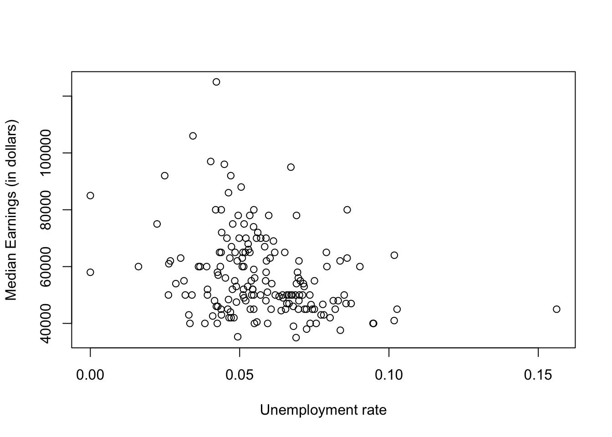
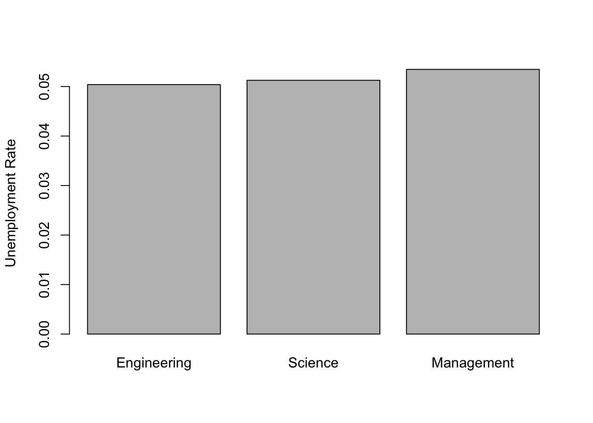

For this sample dataset, we will be using the college_all_ages dataset from the fivethirtyeight package. This was used for the article “The Economic Guide To Picking A College Major”.
To download this package
If done correctly, you can use the dataset
college_all_ages we’ll be using for sample questions. In
particular, you should get the first few rows of the dataset if you type
in
head(college_all_ages)## # A tibble: 6 × 11
## major_code major major_category total employed employed_fulltime_ye…¹
## <int> <chr> <chr> <int> <int> <int>
## 1 1100 General Agri… Agriculture &… 128148 90245 74078
## 2 1101 Agriculture … Agriculture &… 95326 76865 64240
## 3 1102 Agricultural… Agriculture &… 33955 26321 22810
## 4 1103 Animal Scien… Agriculture &… 103549 81177 64937
## 5 1104 Food Science Agriculture &… 24280 17281 12722
## 6 1105 Plant Scienc… Agriculture &… 79409 63043 51077
## # ℹ abbreviated name: ¹employed_fulltime_yearround
## # ℹ 5 more variables: unemployed <int>, unemployment_rate <dbl>, p25th <dbl>,
## # median <dbl>, p75th <dbl>To get a gist of what is in this dataset, type
?college_all_ages into the console to get a description of
the dataset and the relevant variables.
For the contest, you will be given questions related to a single dataset. Depending on the difficulty of the question, you will be given nudges in the right direction, along with relevant functions that you might use to solve the question.
For this sample dataset, the website 538 was trying to figure out a type of ranking for majors based on income.
Disclaimer: We’re not making any claims here about what your major should be! There’s much more to a job than just income.
Here is a list of sample questions which are similar in spirit to the types of questions you might see for the actual competition. Of course, there are multiple ways to solve any of these questions, but we give one such set of solutions at the end of this page. Perhaps a good way to approach these questions are to peek at the solutions for the first few questions, and then try solving the rest yourself.
Note 1: for the actual competition, it will be possible to solve all problems using the functions presented in this page and the R fundamentals page [LINK]. Both pages will be available to you during the competition.
Note 2: For all questions, You may assume that we don’t have any students majoring in more than one topic (i.e., no double majors).
(1) How many different majors are there?
(2) How many students are represented in the dataset?
(3) On average, how many students are there in a major?
(4) How many neuroscience majors are there?
(5) What is the unemployment rate for the entire dataset? (Careful: you shouldn’t just take an average of unemployment rates for majors!)
(6) What major has the lowest unemployment rate? The highest? What are the unemployment rates of these professions?
(7) Is there a relation between the unemployment rate and median earnings for a major? Justify using a scatterplot and correlation coefficient.
(8) What major has the most “scrunched” income distribution, meaning the smallest difference between the 25th and 75th percentile of earnings? Which major is the least scrunched (most spread out)?
(9) What is the average unemployment rate of majors containing the word “Engineering”? What about “Science”? What about “Management”?
(10) Make a bar graph showing the employment rates for each of these three types of major.
(11) Create an estimate for the total amount of earnings generated from all students represented in the entire dataset.
(1) How many different majors are there?
Solution: We could use the major or
major_code variable to find that the number of different
majors is
length(unique(college_all_ages$major))## [1] 173This code uses the unique function, which finds the
total number of different entries in a variable, and length
which finds how long a vector is. For our question, we can also note how
the dataset is arranged, with each row representing a different major.
If it’s indeed the case that rows aren’t repeated (not a bad
assumption), then we could simply look at the number of rows in dataset,
which is given in the documentation, but can also be found in the first
number in the expression which gives the dimensions of the
dataset:
dim(college_all_ages)## [1] 173 11(2) How many students are represented in the dataset?
Solution: We find in the documentation, by typing
?college\_all\_ages, that the dataset has variables
total for total students in each major. The total number of
students (assuming no double majors) is then given by
sum(college_all_ages$total)## [1] 39834398(3) On average, how many students are there in a major?
Solution: We can divide the total number of students by the total number of majors to get an average of students per major. Let’s define relevant variables to get us there:
A = sum(college_all_ages$total)
B = length(unique(college_all_ages$major))
A/B## [1] 230256.6(4) How many neuroscience majors are there?
Solution: This boils down to finding which row in
the dataset corresponds to neuroscience majors. Yes, in this case you
can type in View(college\_all\_ages) and scroll down until
you find the right row.
But this really isn’t the way to go. What if your dataset has billions of rows? This isn’t far-fetched. Plenty of companies deal with datasets having billions, and even trillions of rows to sort through. Visually inspecting the entire dataset in this case is basically impossible.
The more sound way to find the correct row is to use the
which function.
ind = which(college_all_ages$major == 'Neuroscience')
ind## [1] 89college_all_ages$major[ind]## [1] "Neuroscience"So row 89 is what we’re looking for. Since total gives
total people with a major, we simply type
college_all_ages$total[ind]## [1] 13676(5) What is the unemployment rate for the entire dataset? (Careful: you shouldn’t just take an average of unemployment rates for majors!)
Solution: To explain why we can’t simply take an average of unemployment rates, consider a group of 100 people, with a person holding an orange. What’s the average number of oranges that a person holds? This is found by taking the total number of oranges divided by the total number of people, which gives 1/100.
Now imagine we form two groups. One group contains only the person holding the orange, and the other contains the other 99 people. If we compute average oranges for these two groups, we get 1 orange (for the single person group) and 0 oranges (for the rest). It would be a mistake to say the average number of oranges is the average of the two groups, which is (1+0)/2 = 1/2.
In short, we need to be careful that different majors have different total numbers of students. So what we should do is sum all unemployed people, across all majors, and then divide by rhw total number of unemployed and employed.
emp = sum(college_all_ages$employed)
unemp = sum(college_all_ages$unemployed)
unemp/(emp+unemp)## [1] 0.05529137Note that we need to be careful about total population! If in the
denominator we used sum(college_all_ages$total), we would
get a different answer. Why do you think that’s the case?
(6) What major has the lowest unemployment rate? The highest? What are the unemployment rates of these professions?
Solution: We can find the row number of the major
with the highest unemployment rate using the which.max
function applied to the variable unemployment\_rate
ind = which.max(college_all_ages$unemployment_rate)
ind## [1] 147This, of course, doesn’t give the major (have you ever heard of a “147” major?). You have to plug this index back into the variable to get the name of the major
college_all_ages$major[ind]## [1] "Miscellaneous Fine Arts"We can find the actual unemployment rate using either the
max function
max(college_all_ages$unemployment_rate)## [1] 0.1561475or by using the index which we know is associated with the highest unemployment
college_all_ages$unemployment_rate[ind]## [1] 0.1561475We can do the same thing to fine the lowest unemployment, except now
we use which.min and min:
ind = which.min(college_all_ages$unemployment_rate)
college_all_ages$major[ind]## [1] "Educational Administration And Supervision"min(college_all_ages$unemployment_rate)## [1] 0Wow, that’s a pretty good unemployment rate! Given the major, what do you think might explain such a rate?
If we’re being careful, we’d actually notice that there are two majors that have a zero unemployment rate. We can find this by typing
inds = which(college_all_ages$unemployment_rate == 0)
college_all_ages$major[inds]## [1] "Educational Administration And Supervision"
## [2] "Geological And Geophysical Engineering"The subtle point here is that which.min only gives the
first index in which the minimum occurs. That’s great if you only need
one example of a minimum, but in other cases you might want to find all
such cases.
(7) Is there a relation between the unemployment rate and median earnings for a major? Justify using a scatterplot and correlation coefficient.
Solution: There are variables for both
median and unemployment_rate. A scatterplot
between them can be found with
plot(college_all_ages$unemployment_rate,college_all_ages$median,xlab="Unemployment rate",ylab="Median Earnings (in dollars)")
Note that we weren’t lazy here and labeled each of the axes. This is always a good idea–your audience wants it to be clear what you’re plotting, and doesn’t really care about how the data is stored in whatever file you’re drawing from.
There seems to be inverse relation between the two variables (so the higher the unemployment, the lower the earnings). But it looks to be a pretty weak relation. We can confirm this using the correlation coefficient \(\rho\). We won’t go through details of what this function does, but the main idea is that it is a measure between -1 and 1 that gives how well the data would be approximated with a line. The absolute value \(|\rho|\) of the correlation coefficient gives the strength of the fit, and the sign tells you whether the relation is direct (\(\rho > 0\)) or inverse (\(\rho <0\)). In our case, we have
cor(college_all_ages$unemployment_rate,college_all_ages$median )## [1] -0.3019457Not too surprising. The negative sign tells us we have an inverse correlation, and a magnitude of about .3 tells us that the relation is pretty weak.
(8) What major has the most “scrunched” income distribution, meaning the smallest difference between the 25th and 75th percentile of earnings? Which major is the least scrunched (most spread out)?
Solution:The difference between the 25th and 75th
percentiles, given by p25th and p75th, is a
crude approximation of the variance of a dataset, which is a
widely used measure for how spread out the data is.
Let’s define a variable which computes the scrunch over all majors. Then we can find the index for the maximum and the corresponding major, similar to question (1).
scrunch = college_all_ages$p75th- college_all_ages$p25th
i = which.max(scrunch)
college_all_ages$major[i]## [1] "Petroleum Engineering"The major with the least scrunch uses min instead of max:
i = which.min(scrunch)
college_all_ages$major[i]## [1] "School Student Counseling"Note: It might make more sense to think of a percent change in income rather than just the change itself. How might you devise a formula with this in mind?
(9) What is the average unemployment rate of majors containing the word “Engineering”? What about “Science”? What about “Management”?
This one is quite the challenge! While it is possible to solve this
without importing any packages using the grep and
mapply function (give it a try if you’re feeling
ambitious!), life is much easier if we download the very helpful
stringr package for dealing with text data. Here we find
the indices in which “Engineering” appears, and then list these
majors.
library('stringr')
inds = str_detect(college_all_ages$major, 'Engineering')
college_all_ages$major[inds]## [1] "General Engineering"
## [2] "Aerospace Engineering"
## [3] "Biological Engineering"
## [4] "Architectural Engineering"
## [5] "Biomedical Engineering"
## [6] "Chemical Engineering"
## [7] "Civil Engineering"
## [8] "Computer Engineering"
## [9] "Electrical Engineering"
## [10] "Engineering Mechanics Physics And Science"
## [11] "Environmental Engineering"
## [12] "Geological And Geophysical Engineering"
## [13] "Industrial And Manufacturing Engineering"
## [14] "Materials Engineering And Materials Science"
## [15] "Mechanical Engineering"
## [16] "Metallurgical Engineering"
## [17] "Mining And Mineral Engineering"
## [18] "Naval Architecture And Marine Engineering"
## [19] "Nuclear Engineering"
## [20] "Petroleum Engineering"
## [21] "Miscellaneous Engineering"
## [22] "Engineering Technologies"
## [23] "Engineering And Industrial Management"
## [24] "Electrical Engineering Technology"
## [25] "Mechanical Engineering Related Technologies"
## [26] "Miscellaneous Engineering Technologies"Now we can restrict our entire dataset to only contain majors related to engineering.
library('stringr')
engdata = college_all_ages[inds,]
engunemp = mean(engdata$unemployment_rate)
engunemp## [1] 0.05038847Yes, one may object that the average income should be weighted with respect to how many people are in that major. If that’s the case, how would we compute the mean?
This method, of course, can be similarly used to compute majors containing “Science” and “Management”
library('stringr')
inds = str_detect(college_all_ages$major, 'Science')
scidata = college_all_ages[inds,]
sciunemp = mean(scidata$unemployment_rate)
inds = str_detect(college_all_ages$major, 'Management')
managedata = college_all_ages[inds,]
manageunemp = mean(managedata$unemployment_rate)
sciunemp## [1] 0.05125521manageunemp## [1] 0.05346486Pretty close unemployment rates, it appears. Take a look at other majors and see if they also have similar rates.
(10) Make a bar graph showing the employment rates for each of these three types of major.
Solution: Here we use the variables from the
previous problem, and labels the bars appropriately using the
names.arg function.
library('stringr')
barplot(c(engunemp, sciunemp, manageunemp),
names.arg = c("Engineering", "Science", "Management"),
ylab = "Unemployment Rate")
(11): Create an estimate for the total amount of earnings generated from all students represented in the entire dataset.
Solution: We’ll let you figure this one out yourself! Careful-you’ll need to consider variables like the unemployment rate as well as variables related to income.